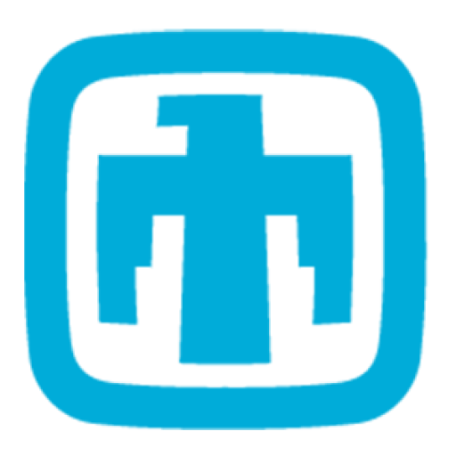

Kyle Daniel Miller
Materials informatics ⇐ Multi-institution government grants | Research Scientist | Citrine Informatics

Keywords
Autonomous materials design and discovery | Surrogate models for atomic simulation | Structure-property relationships | Multiferroics | Metal-insulator transitions | Active learning | Explainable AI | Physics-informed models
Motivation
- I want to create data-driven solutions for materials problems.
- I excel in collaborative, inquisitive environments.
- I prioritize efficient communication and fast failure.
Background
- PhD. in Materials Science and Engineering @ Northwestern University
- B.S. in Physics, Mathematics @ University of Puget Sound
- Summer REU in perovskite synthesis @ University of Minnesota
- Summer REU in molecular dynamics @ Boise State University
Current Work
Research Scientist @ Citrine Informatics, External Research Department
⇒ Developing sequential learning workflow for design of durable nuclear waste forms, cold-sprayed metals and ceramics, and fusion alloys
⇒ Managing ongoing projects & writing proposals for multi-institution interdisciplinary government grants
⇒ Presenting at conferences to disseminate research and build collaborator network
⇒ Advising customer teams on how to best leverage the Citrine Platform for their particular design challenges
Recent Work

Computational materials intern @ Sandia National Laboratories
⇒ Building neural network surrogate models for atomistic simulation
⇒ Contributing to the Materials Learning Algorithms (MALA) framework
NSF Graduate Research Fellow @ Northwestern University, MTD Group
⇒ Discovering and tuning ferroelectric materials
⇒ Developing design rules for metal-insulator transition materials